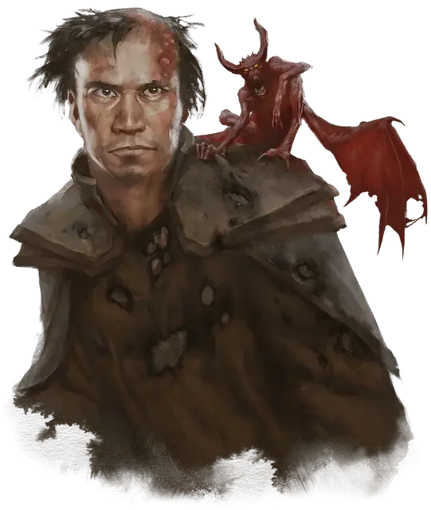

Вильнюс
Vilnius
Средний Гуманоид (Человек), нейтрально-злой, именной НИП

Класс Доспеха 12 (15 с доспехами мага)
Хиты 40 (9к8)
Скорость 30 футов
| мод | спас | ||
|---|---|---|---|
| СИЛ | 9 | −1 | −1 |
| ЛОВ | 14 | +2 | +2 |
| ТЕЛ | 11 | +0 | +0 |
| мод | спас | ||
|---|---|---|---|
| ИНТ | 17 | +3 | +3 |
| МДР | 12 | +1 | +1 |
| ХАР | 11 | +0 | +0 |
Навыки История +6, Магия +6
Чувства пассивное Восприятие 11
Языки Все
Опасность 6 (2300 опыта)
Бонус мастерства +3
Особенности
Языки. Вильнюс знает до 4 любых языков.
Использование заклинаний. Вильнюс является заклинателем 9-го уровня. Его базовой характеристикой является Интеллект (Сл спасброска от заклинания 14, +6 к попаданию атаками заклинаниями). У него подготовлены следующие заклинания волшебника:
• Заговоры (неограниченно): волшебная рука, огненный снаряд, свет, фокусы
• 1 уровень (4 ячейки): волшебная стрела, доспехи мага, обнаружение магии, щит
• 2 уровень (3 ячейки): внушение, туманный шаг
• 3 уровень (3 ячейки): контрзаклинание, огненный шар, полёт
• 4 уровень (3 ячейки): высшая невидимость, град
• 5 уровень (1 ячейка): конус холода
Вильнюс имеет собственного фамильяра квазита.
Действия
Кинжал. Рукопашная или дальнобойная атака оружием: +5 к попаданию, досягаемость 5 футов или дистанция 20/60 футов, одна цель. Попадание: Колющий урон 4 (1к4 + 2).
Описание
Вильнюс одет в обгорелую мантию, его непричесанные волосы наполовину сгорели, а лицо и руки покрыты волдырями от магического огня. Он – ученик Джакариона, мертвого волшебника из области Х17. После того, как его учителя испепелили пылающие черепа, раненый Вильнюс убежал в эту комнату. Чтобы выжить, он ест крыс. Коридор снаружи (область Х8) патрулирует янтарный голем, и Вильнюс не выйдет из комнаты, пока не убедится, что голем уничтожен.
Вильнюс – жадный и вероломный трус. Он проклинает своего мертвого учителя за то, что тот привел их в эти ужасные земли. Если персонажи попробуют с ним подружиться, он отнесется к ним с подозрением, т.к. не знает, чего они добиваются. Он хочет забрать посох и книгу заклинаний своего учителя, но изучать Янтарный храм ему не интересно. Об этом месте он знает следующее:
- Храм – хранилище запретных знаний.
- Пылающие черепа, которые охраняют храм, сделаны из останков мертвых волшебников
- Варвары, живущие в горах, укрываются в храме от непогоды.
У Вильнюса при себе гримуар, в котором записаны все заклинания, которые он подготовил. Под мантией у него также есть золотой амулет в виде перевернутой V. Он сделан очень изящно и стоит 1000 зм. Это амулет контроля Щитостража из области (Х35).
Хотя он знает, что амулет волшебный, он не знает его предназначения. Амулет начинает дрожать, если окажется в 10 футах от щитостража. Если Вильнюс поймет, зачем нужен этот амулет, то ни за что не отдаст его.